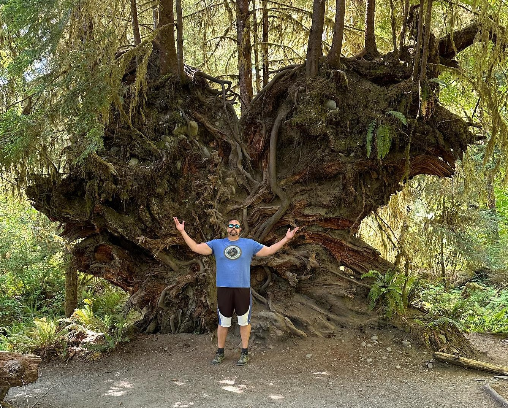

Research
My research focuses on geographic information organization, access, and use. This includes the Research Data Management (RDM) of geospatial data, data disovery, information-seeking behavior of scientists, data management plans, as well as job analyses of data managers facilitating research data services. Also, I use Geographic Information Systems (GIS) to spatially analyze public library locations, market areas, and information agency services and resources. Here are links to my profiles in Scopus and Google Scholar.
Geographic information generally consists of facts, data and/or evidence pertaining to events, activities, and things located on (or near) the surface of the Earth. The processes by which humans chose to organize, access, and use geospatial data are fundamental to many sciences and our everyday lives. Whether the data reuse is to inform facility location decisions, efficiently distribute vaccines, or to quickly navigate a new space, geographic information is essential. The field of Information Science provides a multidisciplinary lens to systematically study geospatial data, its special properties, and how it is discovered and evaluated for re-use.
Data occupations, education, and training studies addresses the curricular needs to meet employment demands for knowledge workers in the areas of science data and its management throughout the research lifecycle. In order to support this rapid growth of jobs in these areas a workforce is needed that will be trained not only in geospatial technologies, but its organization, access, and use. The IMLS projects Collaborative Analysis Liaison Librarians (CALL) and Geographic Information Librarianship (GIL) both included survey validations and interviews of current professionals to inform course development and now has resulted in three electives offered at the University of Tennessee-Knoxville School of Information Sciences and a Geographic Information pathway. Professionals working in museums, libraries, archives, and data centers act as stewards and intermediaries to a rich variety of geospatial data and with shifting user needs and data types further job analyses work will be conducted to better understand all the occupations to produce applicable education and training (e.g. earth scientists, biologists, and so forth).
Select Publications
- Science, technology, engineering, and mathematics (STEM) liaison librarians: Perspectives on functions and frequencies for serving academic researchers
- Data Management Plan Implementation, Assessments, and Evaluations: Implications and Recommendations
- Fitness for use of data: scientists' heuristics of discovery and reuse behaviour framed by the FAIR Data Principles
- Job Analyses of Earth Science Data Managers: A Survey Validation of Competencies to Inform Curricula in Research Data Management Education
- Data Services Librarians’ Responsibilities and Perspectives on Research Data Management
- Job analyses of Earth science data managers: A survey validation of competencies to inform curricula in research data management education
- Job analyses of Earth science data librarians and data managers
- Research Integrity Officers’ Responsibilities and Perspectives on Data Management Plan Compliance and Evaluation
- Documenting social justice in library and information science research: a literature review
- A new decade of uses for geographic information systems (GIS) in library research
- Data Curation Profiling to Assess Data Management Training Needs and Practices to Inform a Toolkit
- Scientists' data discovery and reuse behavior: (Meta)data fitness for use and the FAIR Data Principles [ASIS&T Best Long Paper]
- Measuring FAIR Principles to Inform Fitness for Use [IDCC Best Paper]
- Geographic Information: Organization, Access, and Use
- Earth Science Data Managment: Mapping Actual Tasks to Conceptual Actions in the Curation Lifecycle Model
- Information Science Professionals as Community Action Researchers to Further the Role of Rural Public Libraries in Small Business Economic Development: A Case Study of Tennessee [Best Overall PAper]